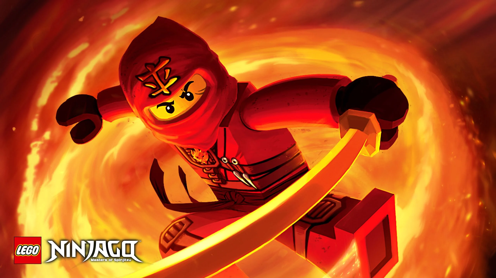

Kai is the elemental ninja of fire. A strong member and one of the many leaders in the group. The red ninja, clad in armor with his trusty sword, guides his members with the undisputed sense of justice and bravery.
Nya is the elemental ninja of water. Sister of Kai, she uses her mastery to fight off evil invaders of Ninjago with her intellect. The only girl on the team, proving her boldness and strength with her contribution. Using the support of water, Nya's spear held a major component in fights.
Lloyd is the elemental ninja of energy. Son of dark and evil Lord Garmmaddon. Lloyd, the green ninja, is able to control all four elements. He is the chosen one, the golden ninja. Starting off with a lost perspective, he gains knowledge and wit to become a wise leader. The ability to use all elemental weapons, assisted Lloyd in his combat skills.
Zane is the elemental ninja of ice. The first Nindroid robot created in a labratory by Dr. Julien, he emerged into a fearless fighter, dedicated to helping others and safeguarding peace. Using his ice shurikens, he defeated enemies with ease.
Cole is the elemental ninja of earth, but a son of a dancer. Refusing to follow those footsteps, Cole was recruited as a ninja by Master Wu.
Jay is the elemental ninja of lightning, the blue ninja. Using the power of his nunchucks, Ninjago introduces a nimble and charismatic component to the team. His jokes and ability to create a joyful atmosphere with his team, makes him a strong character.
Lord Garmmaddon is the son of the first Spinjitzu master and older brother of Master Wu. As a child, he was bitten by the Great Devourer, poisoned with evil and become a warlord focused on destruction.
Master Wu is the secondborn son of the first Spinjitzu master, Garmmadon's younger brother, and the mentor of the Ninjas. Wu grew up learning the art of the ninja alongside his evil brother, Garmmaddon.